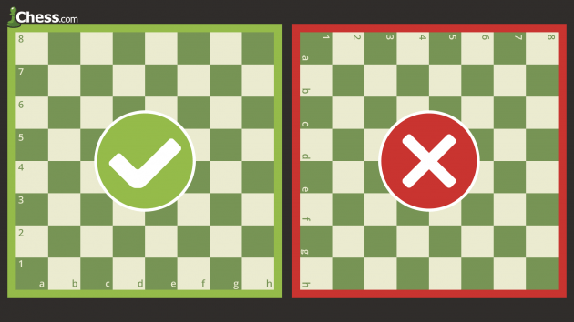
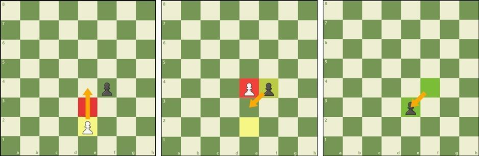

It's never too late to learn how to play chess—the most popular game in the world!
Learning the rules of chess is easy:
1.)Set Up The Chess Board
2.)Learn to move
3.)Discover the special rules
4.)Learn Who Makes The First Move
5.)Check Out The Rules On How To Win
6.)Study The Basic Strategies
Step 1. How To Setup The Chessboard
At the beginning of the game the chessboard is laid out so that each player
has the white (or light) color square in the bottom right-hand side.

The chess pieces are then arranged the same way each time. The second row (or rank) is filled with
pawns. The rooks go in the corners, then the knights next to them, followed by the bishops, and
finally the queen, who always goes on her own matching color (white queen on white, black queen
on black), and the king on the remaining square.
Step 2. How To Move Each Piece On The Chessboard
Each of the 6 different kinds of pieces moves differently. Pieces cannot move through other pieces
(the knight can jump over other pieces which makes it an exception), and can never move onto a square
with one of their pieces on it. However, they can be moved to take the place of an opponent's piece which
is also known as capturing. Pieces are generally moved into positions where they can capture other pieces
(by landing on their square and then replacing them), defend their own pieces against opponent's capture threats,
or control important squares in the game.
How to move a King in Chess
The king is the most important piece, but is one of the weakest.
The king can only move one square -in any direction - up, down, to the sides, and diagonally.
The king may never move himself into check (where he could be captured).
When the king is attacked by another piece this is called "check"
How To Move The Queen In Chess
The queen is the most powerful piece. She can move in any one straight direction - forward,
backward, sideways, or diagonally - as far as possible as long as she does not move through any of
her own pieces.
And, like with all pieces, if the queen captures an opponent's piece her move is over. Notice how the
white queen captures the black queen and then the black king is forced to move.
How To Move The Rook In Chess
The rook may move as far as it wants, but only forward, backward, and to the sides.
The rooks are particularly powerful pieces when they are protecting each other and working together!
How To Move The Bishop In Chess
The bishop may move as far as it wants, but only diagonally.
Each bishop starts on one color (light or dark) and must always stay on that color.
Bishops work well together because they cover up each other's weaknesses.
How To Move The Knight In Chess
Knights move in a very different way from the other pieces -
going two squares in one direction, and then one more move at a 90-degree angle, just like the shape of an “L”.
Knights are also the only pieces that can move over other pieces.
How To Move The Pawn In Chess
Pawns are unusual because they move and capture in different ways: they move forward but capture diagonally.
Pawns can only move forward one square at a time, except for their very first move where they can move forward two squares.
Pawns can only capture one square diagonally in front of them.
They can never move or capture backward.
If there is another piece directly in front of a pawn he cannot move past or capture that piece.
Step 3. Special Rules In Chess
There are a few special rules in chess that may not seem logical at first.
They were created to make the game more fun and interesting.
How To Promote A Pawn In Chess
Pawns have another special ability and that is that if a pawn reaches the other side of the board
it can become any other chess piece (called promotion) excluding a king (or pawn, for that matter).
A pawn may be promoted to a knight, bishop, rook, or queen.
A common misconception is that pawns may only be exchanged for a piece that has been captured.
That is NOT true. A pawn is usually promoted to a queen. Only pawns may be promoted.
How To Do "En Passant" In Chess
he last rule about pawns is called “en passant", which is French for “in passing”
If a pawn moves out two squares on its first move,
and by doing so lands to the side of an opponent's pawn (effectively jumping past the other pawn's ability to capture it)
that other pawn has the option of capturing the first pawn as it passes by.

This special move must be done immediately after the first pawn has moved past,
otherwise the option to capture it is no longer available. Click through the example below
to better understand this odd, but important rule.
How To Castle In Chess
One other special chess rule is called castling. This move allows you to do two important
things all in one move: get your king to safety (hopefully), and get your rook out of the
corner and into the game. On a player's turn he may move his king two squares over to one
side and then move the rook from that side's corner to right next to the king on the
opposite side. (See the example below.) However, in order to castle, the following
conditions must be met:
- it must be that king's very first move
- it must be that rook's very first move
- there cannot be any pieces between the king and rook to move
- the king may not be in check or pass through check
Notice that when you castle one direction the king is closer to the side of the board. That is
called castling "kingside". Castling to the other side, through where the queen sat, is called
castling "queenside". Regardless of which side, the king always moves only two squares
when castling.
Step 4. Learn Who Makes The First Move
The player with the white pieces always moves first. Therefore, players generally decide who
will get to be white by chance or luck such as flipping a coin or having one player guess the
color of the hidden pawn in the other player's hand. White then makes a move, followed by
black, then white again, then black, and so on until the end of the game. Being able to
move first is a tiny advantage that gives the white player an opportunity to attack right away.
Step 5. Rules On How To Win
There are several ways to end a game of chess: by checkmate, with a draw,
by resignation, by forfeit on time...
How To Checkmate In Chess
The purpose of the game is to checkmate the opponent's king.
This happens when the king is put into check and cannot get out of check.
There are only three ways to get out of check:
- move out of the way (though he cannot castle!)
- block the check with another piece or
- capture the piece threatening the king.
If a king cannot escape checkmate then the game is over. Customarily the king is not
captured or removed from the board, the game is simply declared over.
How To Draw A Chess Game
Occasionally chess games do not end with a winner, but with a draw. There are 5 reasons
why a chess game may end in a draw:
- The position reaches a stalemate where it is one player's turn to move, but his king is
NOT in check and yet he does not have another legal move:

With the move Qc7, black is not threatened and can't move.
The game is declared a draw by stalemate.
- The players may simply agree to a draw and stop playing
- There are not enough pieces on the board to force a checkmate (example: a king and a bishop vs. a king)
- A player declares a draw if the same exact position is repeated three times (though not necessarily three times in a row)
- Fifty consecutive moves have been played where neither player has moved a pawn or captured a piece
Step 6: Basic Beginner Strategies
There are four simple things that every chess player should know:
Protect Your King
Get your king to the corner of the board where he is usually safer. Don't put off castling.
You should usually castle as quickly as possible. Remember, it doesn't matter how close
you are to checkmating your opponent if your own king is checkmated first!
Don't Give Pieces Away
Don't carelessly lose your pieces! Each piece is valuable and you can't win a game without
pieces to checkmate. There is an easy system that most players use to keep track of the
relative value of each chess piece. How much are the chess pieces worth?
- A pawn is worth 1
- A knight is worth 3
- A bishop is worth 3
- A rook is worth 5
- A queen is worth 9
- The king is infinitely valuable
At the end of the game, these points don't mean anything—it is simply a system you can
use to make decisions while playing, helping you know when to capture, exchange, or
make other moves.
Control The Center Of The Chessboard
You should try and control the center of the board with your pieces and pawns. If you
control the center, you will have more room to move your pieces and will make it harder
for your opponent to find good squares for his pieces. In the example above white makes
good moves to control the center while black plays bad moves.
Use All Of Your Chess Pieces
In the example above white got all of his pieces in the game! Your pieces don't do any
good when they are sitting back on the first row. Try and develop all of your pieces so that
you have more to use when you attack the king. Using one or two pieces to attack will not
work against any decent opponent.